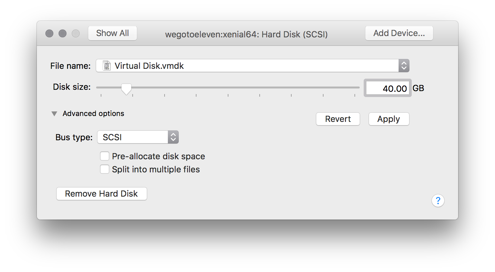
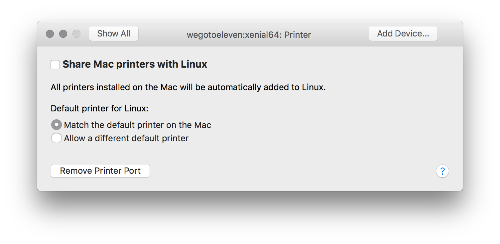

Vagrant is pretty cool, but of late I've been having real issues finding a Vagrant base box that works with VMware Fusion OOTB. My blogging workflow (used to) involve(s) using a Vagrant box with Jekyll to generate a static site on my local Mac, and then uploading to an S3 bucket. The Vagrant Jekyll boxes weren't up to scratch, so I've decided to figure out how to create my own.
This guide covers how to create the box and add it to your list of boxes, for use in specifying within a Vagrantfile. It doesn't cover Vagrant fundementals, so I assume that you'll have some basic knowledge in how it works before embarking on this magical quest.
-
Open VMware Fusion
-
Select “Install from disc or image” and click "Continue"
-
Locate the ISO for the distribution you want to install, then select “Open”, and click "Continue".

-
Unselect the checkbox for “Use Easy Install”
-
Choose “Customize Settings”, and enter a name for the VMware file (
name/OSarch, i.e.wegotoeleven/trusty64) and select “Save"
-
Customise the VM’s settings
- Turn on Shared Folders
- Set memory to desired size, at least 1024MB
- Change the Networking to "Share with my Mac" (aka NAT)
- Change the disk size to 40 GB and deselect “Split into 2GB files”
 - Turn off the sound card
- Expand "Advanced USB options" and select "Remove USB Controller"
- Untick "Share Mac printers with Linux"

- Turn on Shared Folders
-
Boot the VM, install the Guest OS and customise the following settings when prompted:
-
Host Name: Same as the second part of the name of the VMware file (i.e. trusty64)
-
Full Name:
vagrant
-
User:
vagrant
-
Password:
vagrant
-
Once setup and at the command prompt, login and change the Root Password. When asked, set to
vagrantsudo passwd root -
Update the OS because updates
sudo apt update && sudo apt upgrade -y -
Update the Sudoers file with the following to allow the vagrant user sudo rights without having to authenticate with a password
#Defaults !visiblepw Defaults env_keep="SSH_AUTH_SOCK" -
Test. Is the following command outputs the current directory instead of an error, all is good
sudo pwd -
Restart VM
sudo shutdown -r now -
Make ssh folder
mkdir ~/.ssh -
Set permissions
chmod 700 ~/.ssh -
Download Vagrant authorised keys
wget --no-check-certificate https://raw.github.com/mitchellh/vagrant/master/keys/vagrant.pub -O ~/.ssh/authorized_keys -
Set permissions on authorised keys file
chmod 600 ~/.ssh/authorized_keys && chown -R vagrant ~/.ssh -
Install OpenSSH
sudo apt install openssh-server -y -
Edit the SSH config file
sudo nano /etc/ssh/sshd_config -
Restart SSH service
sudo service ssh restart -
Install VMware Tools. Begin by mounting the VMware Tools by selecting Virtual Machines > Install VMware Tools from the menu bar menu
sudo mkdir -p /mnt/cdrom sudo mount /dev/cdrom /mnt/cdrom tar xzvf /mnt/cdrom/VMwareTools-9.2.2-893683.tar.gz -C /tmp cd /tmp/vmware-tools-distrib/ sudo ./vmware-install.pl\ -
Wipe the free space on the VM to stop fragmentation
sudo dd if=/dev/zero of=/EMPTY bs=1M sudo rm -f /EMPTY -
Shutdown the VM
sudo shutdown -h now -
Navigate to the location of your vmwarevm. By default this location is
~/Virtual Machines/.cd ~/Virtual Machines/wegotoeleven:xenial64.vmwarevmNote: Any forward slashes (
/) will be translated into colons if the name of the VMware file contains a forward slash -
Create a file named
metadata.jsonand enter the following contents:{ "provider": "vmware_fusion" } -
Create a file named
Vagrantfileand enter the following contents.# -*- mode: ruby -*- # vi: set ft=ruby Vagrant.configure("2") do |config| config.vm.provider :vmware_fusion do |v, override| v.gui = false end end -
We next want to optimize the box to reduce it’s size:
/Applications/VMware\ Fusion.app/Contents/Library/vmware-vdiskmanager -d Virtual\ Disk.vmdk /Applications/VMware\ Fusion.app/Contents/Library/vmware-vdiskmanager -k Virtual\ Disk.vmdk -
Finally compress the box:
tar cvzf package.box ./ -
Add the box to Vagrant
vagrant box add wegotoeleven/xenial64 package.box
I couldn't have done this without the following blog posts:
And yeah. I know I said 30.